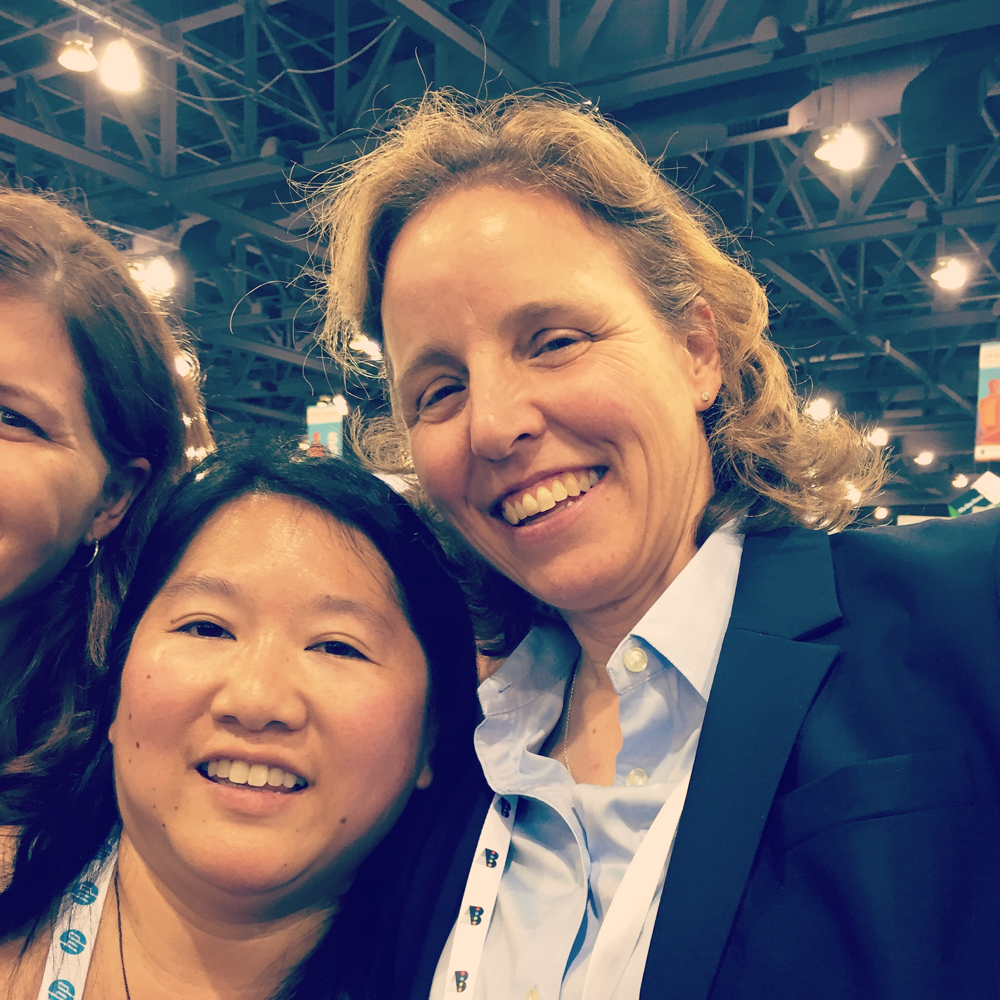

I just came back from attending the 2014 Gracehopper Conference held in Phoenix Arizona. It was an amazing event to attend, with 8000 attendees from 67 different countries. Over 7500 attendees were women and 400 of them were students and faculty attending via scholarships.
Gracehopper is a conference that started in 1994, by Dr. Telle Whitney and Dr. Anita Borg. It was inspired by the legacy of Admiral Grace Murray Hopper , a pioneer in the field of computer science. This conference was created in order to bring women in research and career interests of computing together.
This event covered three days of presentations, networking, career fair, and the celebration of women in computing. It covered fantastic topics such as "Communicating for Impact and Influence", "Life of a Chromium Developer", "Winning at the Game of Office Politics" and much more. One of my favorite quotes was tweeted after a session on salary negotiation:
"There will be a legion of women coming your way to negotiate their salary. So companies...budget accordingly" - Ruthe Farmer
With presentations that filled up early, I had to make difficult decisions whether or not to attend technical sessions or non-technical communiction presentations. I chose an interesting session on "The Basics of Contributing to Open Source with GitHub" and missed getting into a session on communications. The line wrapped around the building, and I was in line 20 minutes early!
My favorite part of this event, was getting a chance to meet Megan Smith, CTO of the United States. I spent two hours waiting in line for a chance to meet and take a photo with her. She was a secret special guest of the keynote on the second day. A very intelligent and busy woman, she took time to talk to women in groups of 20 about school, computing, and volunteering.
There were over 300 companies in attendance, and it made for some interesting swag, that included:
/*This is what a programmer looks like */
As my husband said, I'm not a programmer yet, but I am working on it! I think I'm still entitled to wear the shirt, if I am a programmer in training.
In the end, it was a fantastic experience to have. I am glad I fought for the opportunity to go to it. I am continuing to contribute to the commmunity by tweeting and sharing articles with my coworkers.